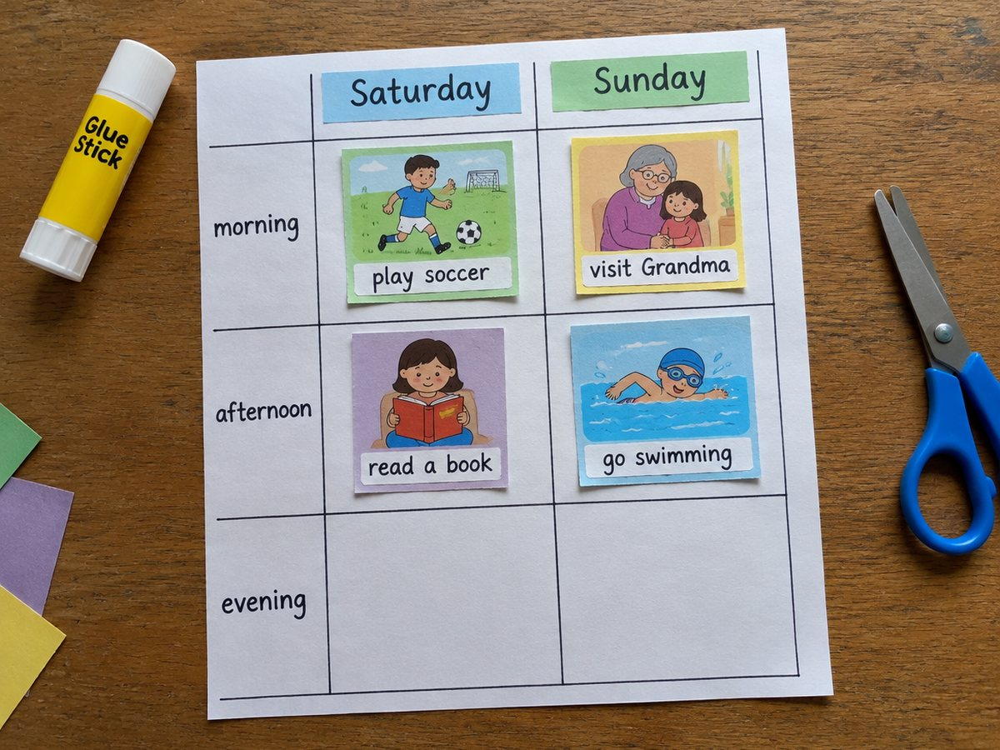

주말 계획 달력

토요일과 일요일 계획을 그림 달력에 채우고, I'm going to ~. 로 가족에게 발표한 뒤 지켰는지 확인해요.
계획 20분 · 확인 10분 · 난이도 ★★☆ 보통
준비물
- 주말 계획 달력 도안 — 토·일 오전/오후 칸과 활동 낱말 스티커 (A4 1장)
- 색연필, 풀, 가위 —
- 체크 스티커 (선택) — 지킨 계획에 붙여요
하는 방법
- 활동 고르기
도안의 활동 낱말(play soccer, visit Grandma, clean my room, read a book, go swimming, watch a movie 등)을 오려요. - 달력 채우기
토·일 오전과 오후 칸에 활동을 붙이고, 빈 칸에는 직접 써요. - 계획 발표하기
가족 앞에서 On Saturday, I'm going to play soccer. 처럼 발표해요. - 질문 주고받기
가족이 What are you going to do on Sunday? 하고 물으면 달력을 보고 답해요. - 일요일 저녁 확인
지킨 계획에 체크하고, 못 지킨 것은 다음 주로 옮겨요.
5~6학년 '계획 말하기'는 be going to + 동사원형으로 정해 둔 계획을 말하는 표현입니다. 동사 앞에 to가 오고, 동사는 항상 원래 모양(play, visit)이라는 점만 짚어 주세요.
On Saturday, this weekend, tomorrow처럼 때를 나타내는 말을 함께 쓰면 문장이 훨씬 자연스러워집니다.
일요일 저녁 확인 단계는 '지난 일 말하기'(I played soccer.)로 이어 연습하기 좋습니다.
학교 교육과정 연결
- [6영02-06] 자신의 감정이나 의견, 경험이나 계획을 간단한 문장으로 표현한다.